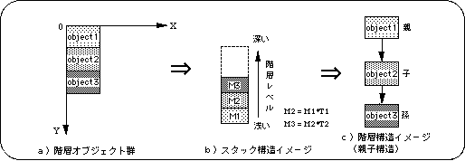
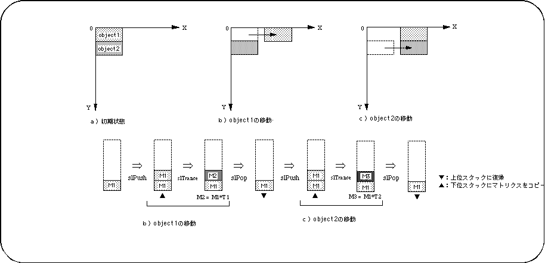
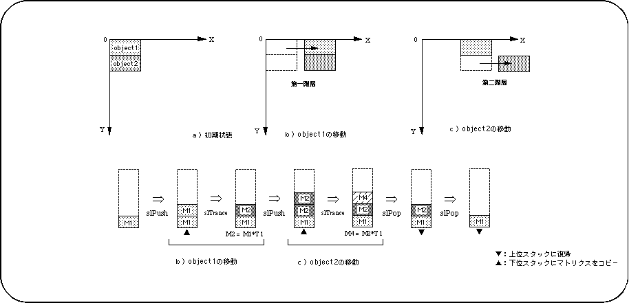

Return to previous page | Return to menu | Go to next page
Figure 5-3 shows an image model of a group of objects given a hierarchical structure. object1 is set to the shallowest level in the hierarchy, and object2 and object3 are defined as the following levels.

When using a hierarchical structure, the object behaves as shown in Figure 5-3. Figures 5-4 and 5-5 show the results of applying the same transformation to an object group that does not use a hierarchical structure and an object group that uses a hierarchical structure (each object is parallel to the X direction). To move).

